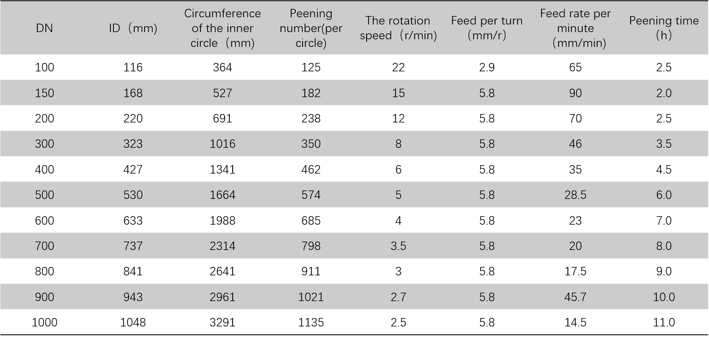
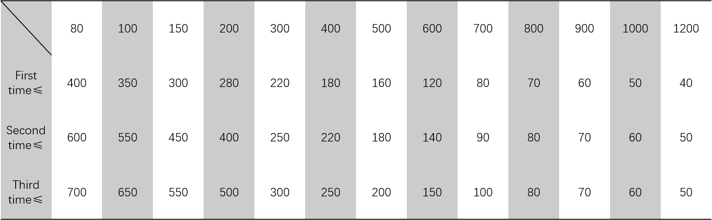

There is no visible damage, knock , metallurgical and processing defects on the appearance of the cast pipe mould.
Portable Lobb Brinell or Brinell hardness tester is used to inspect the new cast pipe moulds and check with the finished product drawings.
Use inside micrometer, outside micrometer, vernier caliper, π ruler and other measuring tools for inspection, and check with the requirements of finished drawings.
Use dial gauge for testing and check with finished product drawing requirements.
The wall thickness meter was used for testing, recording and filing.
After passing the inspection, it shall be stored in the specified area. It shall be horizontally placed with a pillow or soft plastic material as a fixed support. The fulcrum shall not be placed on the frame position, and there shall be no contact with hard material at both ends, and the distance from ends shall not be less than 100mm. Do not store in damp, open air and other environment.

It is suggested that peening should be done by two times to avoid the mocro-cracks.

In order to improve the service life of the cast pipe mould, the number of pipe pulling shall be controlled in the first three times for use of the cold mould, so that the cast pipe mould can adapt to the use temperature and release the stress. After the first three times of normal use, according to the quality of the cast pipe mould, gradually increase the number of pipe pulling to reach the usual usage.